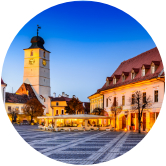
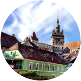

DRACULA’S TRANSYLVANIA GRAND TOUR
with Dacre Stoker
Romania
June 12th-22nd 2023
Over the course of this trip, we will visit the historical regions of Romania: Transylvania, Wallachia and Moldavia, to immerse ourselves into the culture and history that so much influenced Bram Stoker in writing the novel Dracula. Absorb the atmosphere, learn the history, and experience the dramatic beauty of multiple locations, together with knowledgeable guides. We will visit the Romanian capital Bucharest, the beautiful German-Saxon towns and villages in Transylvania, and we will experience the dramatic landscapes of Moldavia beyond the Carpathian Mountains.
Good to know before the tour!
This tour focuses on the genuine culture of Romania, and the way its essence, discovered by Bram Stoker in several books, influenced his literary creation. It is a cultural tour, but there will be nature activities as well. A particular hike, in the Carpathian Mountains, will require waterproof, comfortable walking/hiking shoes, as well as a basic hiking physical condition. All hikes and outdoor activities will depend on weather conditions and can be cancelled to prioritize safety of the participants.
With Transylvanian local guide Nora Vintila and great grand-nephew of Bram Stoker, international best-selling author Dacre Stoker.
Special Guest on the tour in June 2023: Victoria Price.
On the tour departing June 2023, a special guest will be Victoria Price, writer and public speaker, daughter of one of the most iconic and beloved horror movie actors in the world, Vincent Price. You will be able to mingle and discuss Dracula, gothic literature and horror films and film locations with Victoria and her fellow travelers, who all share a genuine interest in the horror genre.
Day 1
Local guide Nora meets you at Bucharest airport. We welcome you with the traditional Romanian cherry liqueur and delicious cookies. Transfer with a panoramic tour of the capital city to our centrally located hotel, where we are greeted by Dracula expert Dacre. Check in and rest after the flight or explore Bucharests Old Town.
We visit Bucharest’s old town, a unique blend of European urban everyday life & ancient Byzantine, and huge communist buildings from before 1989 - the year that marks the fall of communism. We pass by the 14th century Old Princely Court of Vlad Dracula, built as a residence during the rule of Vlad III Dracula in 1459, currently under restauration. We also learn about another Romanian modern day ”vampire” who actually tormented the Romanian people in other ways than a typical vampire would, communist dictator Ceausescu, as we pass by the enormous Palace of Parliament, a monument of megalomania.
In the early evening, we get together for an introduction into the Dracula concept, together with Dacre.
We explore Bram Stoker’s Count Dracula and history’s Vlad Dracula. Dacre gives us valuable insights of his uncle’s novel writing research, during an audiovisual presentation. The welcome dinner is served at one if the oldest inns of Bucharest, part of a cultural heritage building with walls impregnated with memories from the early 1800’s, with folklore musical entertainment.
Day 2
We leave Bucharest in the morning and head towards the Carpathian Mountains. We stop for a short visit in UNESCO site of Curtea de Arges monastery church, with the graves of all Romanian kings. We then have lunch at the foothill of Poenari Fortress, built in the 13th century, and currently closed for restauration. Realizing the potential for a castle perched high on a steep precipice of rock, Vlad III Dracula repaired and consolidated the structure in the 15th century, making it one of his main fortresses.
We drive on the impressive road of the Transfagarasan, passing by the lake that might just be the Scholomance lake mentioned in the novel Dracula.
We arrive to the town of Sibiu, called Hermannstadt in German, later this evening, and check in at a central hotel. Dinner is served at a traditional restaurant nearby.
Day 3
Sibiu is Nora’s hometown, and also previously European cultural capital. Nora takes you on a pleasant and very interesting guided walk of the ”town of 1000 eyes”, as Sibiu is called. Beyond the rich local history, we discover the work of the Scottish writer Emily Gerard, who lived here between 1893 and 1895, writing the essay Transylvanian Superstitions. Gerard is the one who introduced the term ”Nosferatu” into mainstream literature and inspired Bram Stoker in the writing of his novel.
There will be a few hours of free time for lunch on your own, as well as shopping after the tour.
Afterwards, we take a short bus tour to the foothill of the Southern Carpathians.
A homemade dinner is served at a local sheep farmers’ family, who reveal their rough way of life and their constant fight against their eternal fiend: the wolf.
We gather around the bonfire for a storytelling session, with Dacre reading ”Transylvanian Vampire Tales” and Nora playing guitar and revealing some of the Romanian superstitions still vivid today.
Day 4
We depart for Sighisoara after breakfast. On the way, we stop by in one of the colorful Saxon villages. We visit the fortified church, a dominant feature in the medieval structure in most Transylvanian-German villages. We learn about the very disciplined way in which the Saxons organized their life, in order to survive in front of enemy attacks throughout the centuries. We taste some of the traditional chark offerred by our Saxon host, who keeps the Germanic tradition alive.
We arrive to Sighișoara, the birthplace of Vlad Dracula. During a guided walk, we get to know the UNESCO walled city, one of the last remaining medieval citadels still inhabited to this day. We also explore an exhibition dedicated to the personality of Dracula. There will be a few hours of free time for lunch on your own, and for leisurely walks.
We check in at a hotel housed in one of the old nobiliary properties of the old town. After dinner in the house where Vlad was born, we enjoy a wine & vampire movie evening, together with Dacre.
Day 5
We leave Sighisoara after breakfast and head towards the region of the Borgo Pass. On the way, we stop for a wine tasting in the idyllic setting of the Transylvanian highlands and enjoy the ”golden Mediasch” mentioned in the novel.
Lunch is served on the way. We overnight in the area of Bistriz.
Day 6
We start to cross the magnificent scenery of the Borgo Pass.
We visit the local visitor’s centre of the Calimani National Park, to get an overview of the geography, geology and wildlife of the area. Here, Dacre helps us understand how Bram Stoker reasoned when placing Dracula’s fictional castle in this region. Picnic lunch on the way.
Crossing the Carpathian chain, we arrive to a rustically placed inn, where we accommodate for the coming two nights.
A cauldron gulasch dinner awaits at the hotel. Dacre reads and analyzes the final chapter of the novel Dracula.
Day 7
This is a hiking day. We leave early in the morning and the destination is the extinct volcano site of the mountain top where Bram Stoker placed Dracula’s fictional castle.
There aren’t many words that can describe this experience. Nature’s majestic silence and Dacre’s tales of his uncle’s research, all backed by our mountain guide’s reliable lead, grant an exceptional hike to a very little explored exciting spot.
We have a picnic lunch on the way. We return to our inn in the early evening and enjoy a well deserved dinner and a relaxing movie night introduced by Dacre.
Day 8
Leaving the the landscape of the Calimani National Park behind, we head now southwards. We pass through the Szekely region, where Count Dracula claims to originate from, in the novel.
Your guide Nora makes a comprised analysis of Bram Stoker’s descriptions of the area’s mysterious geological &chemical properties. Lunch is served with a beer tasting at the Hungarian-Szekler brewer Csiki Sör.
We then move on towards Bran & what we all call Dracula’s Castle.
Day 9
Nora takes us on a guided walk through the old town, passing by the Black Church, as well as the house of Katharina, known as Vlad Dracula’s mistress, for whom he’s said to have nurtured eternal love. Free time for shopping and lunch.
In Bran, we stay at a boutique inn close to Bran Castle. During the castle visit, Dacre will graphically explain how he discovered imagery connections between this castle and the way in which Bram Stoker described the castle exterior. The vampire dinner is served close to the castle.
Bring your gothic/victorian/vampire accessories to enhance the atmosphere!
Day 10
Your local guide Nora Vintila and your Dracula-host Dacre Stoker say LA REVEDERE!
PRICE
for a group of 10-15 pers: 2280 €/pers, including:
- accommodation 10 nights in double occupancy in top rank hotels
- transfers by private coach/minibus
- activities, entrance fees according to program
- Dacre Stoker as tour leader & Dracula expert
- Nora Vintila as a tour manager & Transylvanian history expert
- meals according to program (details to be emailed): excluding all beverages, except for the welcome drinks mentioned in the program
Single room supplement: 375 €
The price excludes: flight, insurance, beverages, gratuities for staff (tips), flight, excursions or activities other than those mentioned.
Please note that all activities are subject to change, due to local conditions and to the pandemic situation. We can assure you that Experience Transylvania and Dacre Stoker strive for the perfect experience for you as a guest, which is why we might change certain activities for better or more appropriate ones, in case the itinerary, the weather conditions or the safety of the sites impose that case.
Deadline for all bookings: January 30th 2022
Seats on this tour are limited!
By submitting your booking request, you simply inform us of your wish to join this tour. At the moment, this submission does not involve any obligations for you as a tentative guest. The contract between you as a traveler and Experience Transylvania as an organizer starts only when you’ve received the final program, along with the terms & conditions, and when you’ve paid your booking fee amounting 300 € (non-refundable).